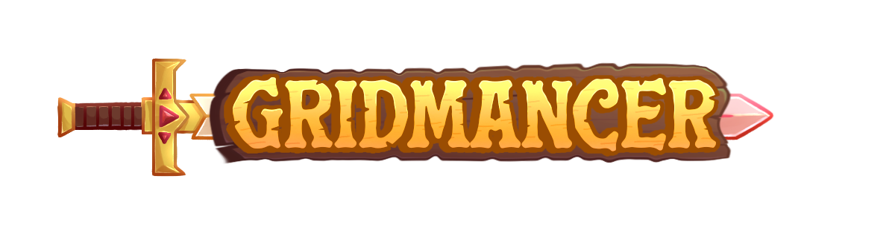
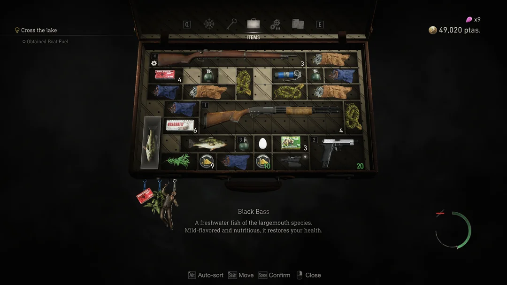
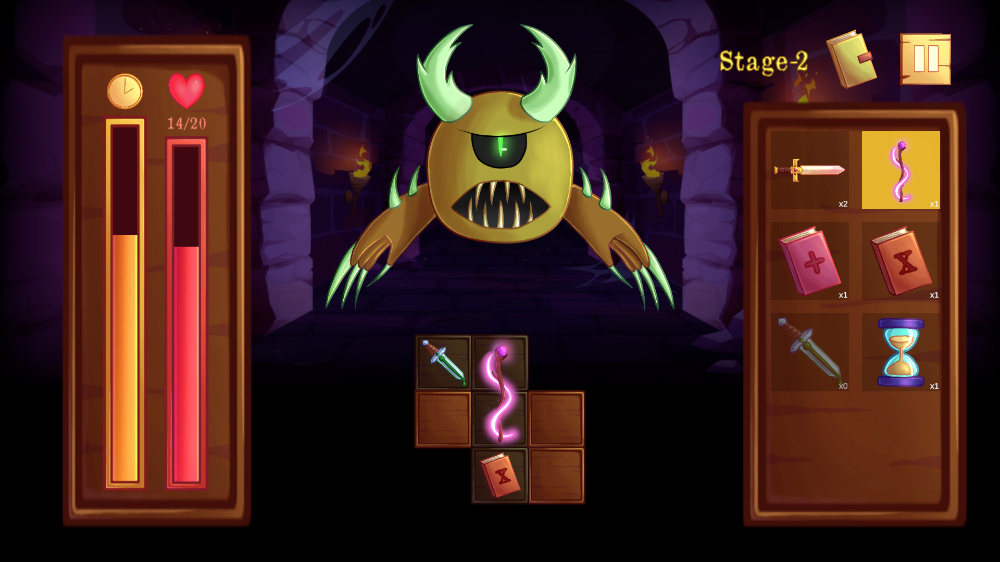
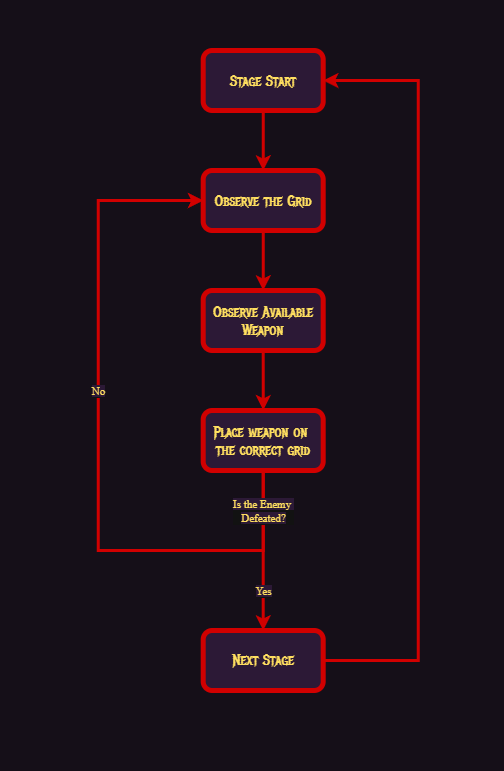

Play GridMancer on itch.io
Play GridMancer on itch.io
01
Game Designer
- Game Concept and Core Mechanics
- Game Balancing
- Level Design
- UI Design Assist
GAME JAM PROJECT

GridMancer is a 2D tactical puzzle game created for the Compfest 2026 Game Jam, where three developers had three days to answer the theme “Order in Disorder.” Build your arsenal, manipulate a limited grid, and make every placement count as enemies close in.
01 — PROJECT DETAILS
Detailed documentation of GridMancer's design, mechanics, systems, and development process.
02 — MY CONTRIBUTIONS
03 — DESIGN APPROACH
I’ve always been interested in how the Resident Evil inventory system implements its item-matching puzzle mechanics. This inspired me to explore how similar mechanics could be applied more directly to combat gameplay.
This game is an entry for the Compfest 2026 Game Jam, themed “Order in Disorder.” We aim to explore this theme by combining the orderly nature of item-matching puzzles with the disorder of grid-based layouts and resource management.
Inspired by the recent game Overgeared Hero, GridMancer takes item-matching mechanics and applies them to a more direct combat system. Every placement is permanent, and each item has unique synergies with others. Players must therefore carefully strategize their weapon placement on the grid.


04 — CORE GAMEPLAY LOOP
